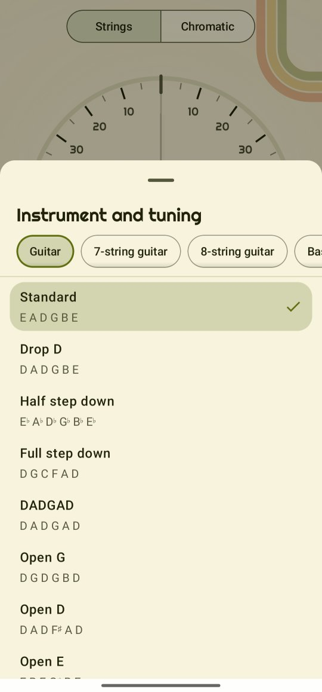

Instruments and tunings
Twangle knows twelve instruments and their common tunings. Any tuning can go down by up to 2½ steps, and you can make tunings of your own. The tuner, the reference tones and the practice tools all follow what you pick.
Pick yours
- On the tuner, tap the headstock button above the strings. (In Chords, Scales, Capo and Ear training it sits at the top, beside the tool button.)
- Instrument and tuning opens: the instruments in a row across the top (swipe it for more), that instrument's tunings under it, each with its strings' notes.
- Tap a tuning. Twangle remembers it.
The instruments
- Guitar: Standard (E A D G B E), Drop D, Half step down, Full step down, DADGAD, Open G, Open D, Open E and Open C.
- 12-string guitar: Standard, as six pairs of strings (below).
- 7-string guitar: B E A D G B E. 8-string guitar: F♯ B E A D G B E.
- Bass: E A D G. 5-string bass: B E A D G.
- Ukulele: Standard (G C E A, the G high), Low G and Baritone (D G B E).
- Violin G D A E, viola C G D A, cello C G D A.
- Mandolin: G D A E, four pairs of strings tuned alike; tune each string, Twangle reads a pair as one.
- 5-string banjo: Open G (g D G B D), Double C (g C G C D) and Double D (f♯ D F♯ A D), with its short string (below).
Anything else, or your voice: switch to Chromatic and Twangle names any note.
Lower a tuning
At the bottom of the panel, Lower by takes the picked tuning down by ½ to 2½ steps, for heavier music or to rest a singer's voice. Twangle calls it by its usual name where it has one: Standard 2 steps down is C standard, Drop D a step down is Drop C; otherwise Open G, ½ step down. The 5-string bass can't go lower: its low B is already as low as Twangle listens.
Tunings of your own
New tuning, at the end of the list, opens a page where you give the tuning a name and set each string a semitone lower or higher, then Save. Your tunings stand under My tunings; the ⋮ beside one has Edit and Delete.
The 12-string's pairs
A 12-string has six pairs of strings, called courses. On the four lowest (E A D G) the second string is an octave higher; on B and E both strings are the same note. So Twangle shows six string buttons, as on a 6-string. Tune each string on its own: pluck the thin octave string of the low E pair and Twangle knows it belongs to that pair, keeps the name E2 and measures it against its own octave.
The strum check and the chord name are off for the 12-string: its twelve strings ring too close together to tell apart. The 12th-fret check, the chord charts, scales and the capo work as on a guitar.
The banjo's short string
The 5-string banjo's fifth string starts at the fifth fret and sounds high. As banjo players write the tuning (g D G B D), it comes first in the row of strings, a little apart from the others. The strum check and the chord name work on the banjo; the 12th-fret check doesn't, as the short string's octave is at the 17th fret. The chord charts draw it from where it starts (see Chords), the Scales neck draws it faded below its start (see Scales), and Ear training's Chord type strums it with the chord (see Ear training). Capo doesn't know the short string yet and says so.
Which tools work where
- The tuner, the pitch trail and the metronome: every instrument.
- Strum check: every instrument but the 12-string.
- 12th-fret check: the guitars and basses, the ukulele and the mandolin (not the violin, viola, cello or banjo).
- Chord name: the guitars but the 12-string, the ukulele, the mandolin and the banjo.
For the curious: low strings and each instrument's voice
A low string's wave is slow: the 5-string bass's B, the lowest string Twangle knows, repeats only 31 times a second. For tunings that go below the guitar's range (the 7- and 8-string, the basses, the cello, Open C and tunings lowered to C or below) Twangle listens to twice as much sound at a time, so it catches enough of the wave to measure it.
When you hold a string's button, the reference tone plays in that instrument's own sound, made by the app: a steel-string guitar, the 12-string with every pair ringing, a bass, a ukulele, the bowed strings, the mandolin and the banjo.
